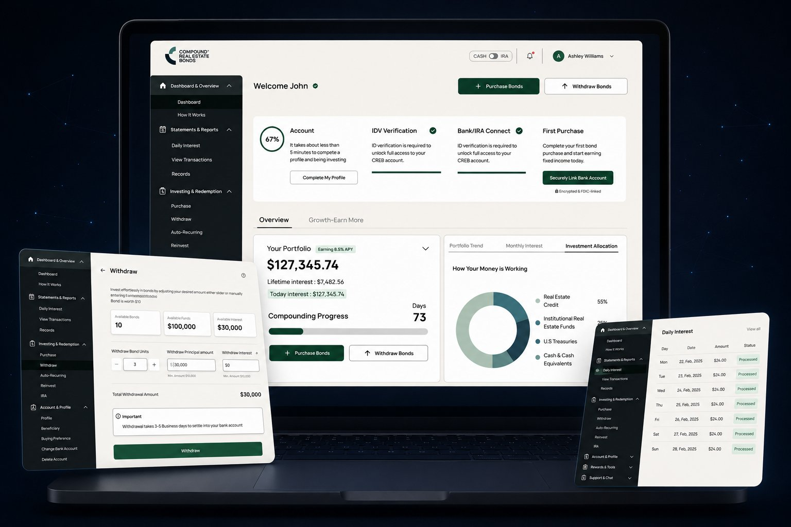
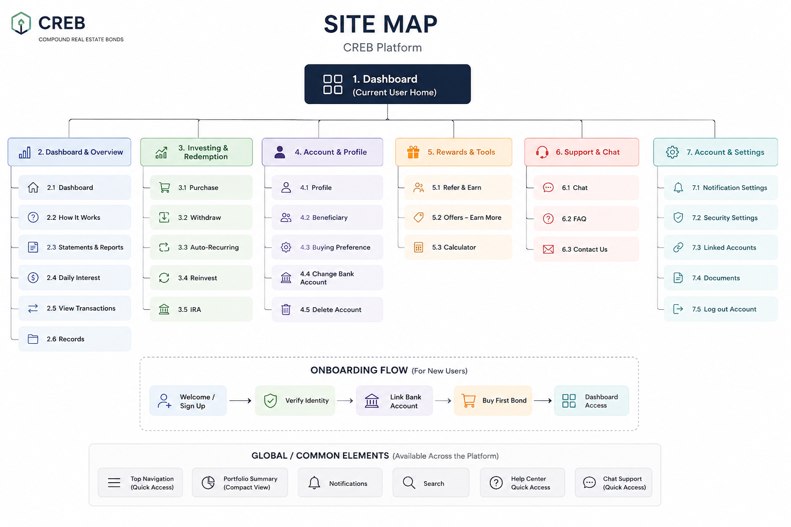
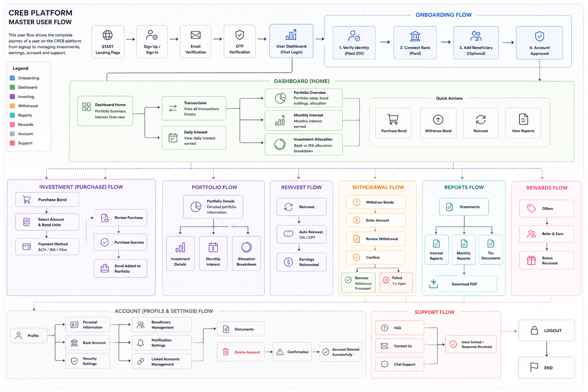
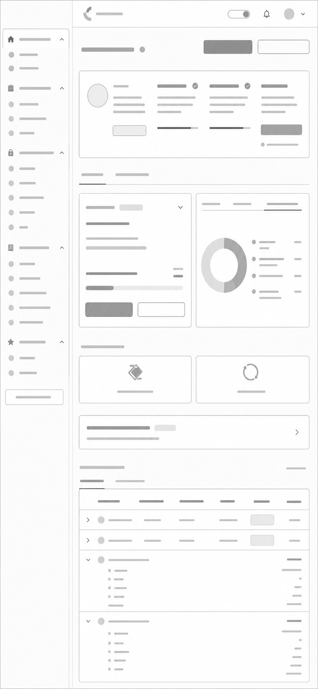
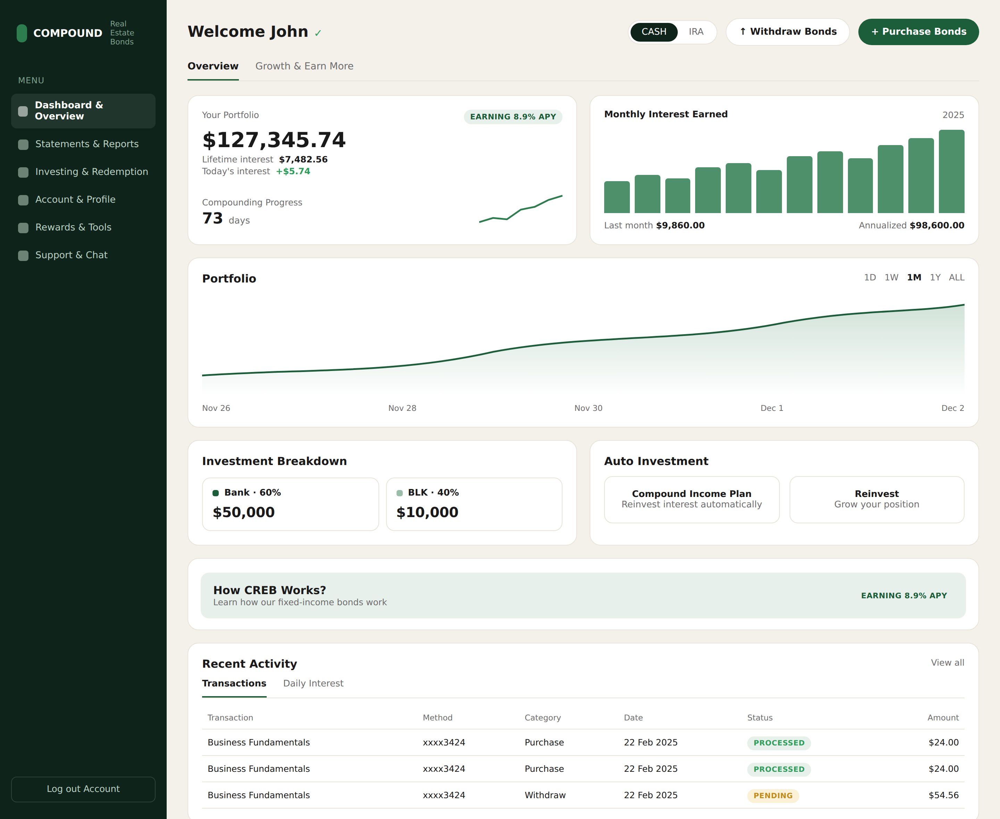
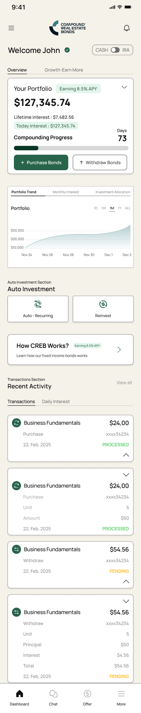
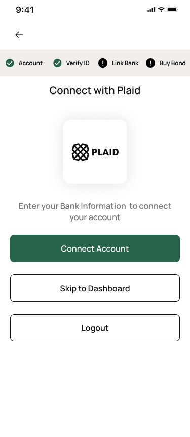
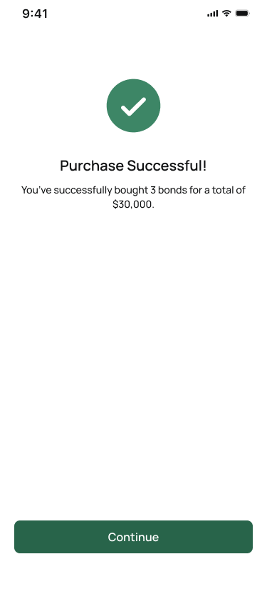
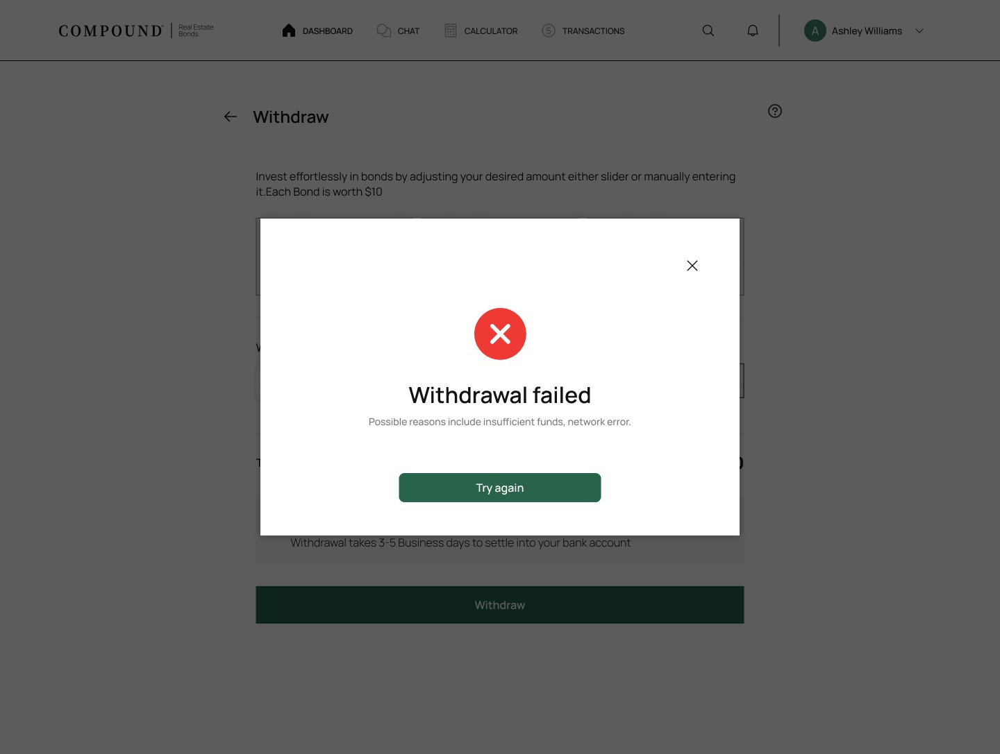

I rebuilt trust into Compound Real Estate Bonds.
CREB lets regular people invest in real-estate-backed bonds. I redesigned the whole journey: signing up, verifying ID, buying, withdrawing, and the reports. The rule I kept coming back to was simple. Take the doubt away before you ask someone to commit.

It worked, but it made people nervous.
CREB asks a lot more than a normal app. You connect your bank and move real savings into something most people have never bought before. That's a heavy moment.
The old flows worked, but they felt anxious. Steps weren't explained, jargon showed up at the worst times, and the dashboard never reassured people their money was doing anything. In a money app, that anxiety is the thing that loses you customers.
Trust
People needed proof at every step. What's verified, where the money goes, what happens next.
Plain language
APY, bond units, accrued interest, maturity. Obvious to the business, confusing to a first-timer.
System
Every screen was a one-off. It needed a shared system so it felt like one product.

Map the whole product first
Before touching a single screen, I mapped the whole product: dashboard, investing, redemption, account, rewards, support. The sitemap became the thing we all agreed on, and it forced every feature into a place that made sense.
Trace every journey end to end
Then I drew the flows: first purchase, recurring investment, withdrawal, ID and bank linking, plus every success and failure state. Drawing the paths before the pixels is how you catch the edge cases that usually slip through.
Low fidelity, then high
Wireframes locked the structure while it was still cheap to change things. I only moved to final UI once the bones were solid, so the polish never hid a broken flow.

The whole journey on one canvas. Mapping the success and failure states side by side is what kept the build from missing edge cases.


Same flow, two levels of detail. I made the calls in grayscale and checked them in color.
The dashboard became the product's trust hub.
Now every big moment answers the question before you ask it. What's verified, which account is connected, where the money goes, and what happens next.
The home screen opens with portfolio value and interest earned, so you can see the money is working, and tucks the detail underneath for people who want it. For bank linking, ID, and buying, I put plain explanations right where the doubt used to be.

Portfolio value and the 8.9% APY lead. Lifetime interest, compounding progress, and the monthly-interest and portfolio charts sit right under it. Investment breakdown, auto-investment, and recent activity follow, in that order. Calm to glance at, detailed when you dig in.






Built mobile-first. Each step (link, verify, buy, confirm) is designed to clear up doubt right when it shows up.
Taking money out is where trust gets tested.
Pulling money out is the moment an app proves it's honest. I designed the full set of screens (confirm, success, failure, and help) so even the bad paths feel handled instead of hidden.

